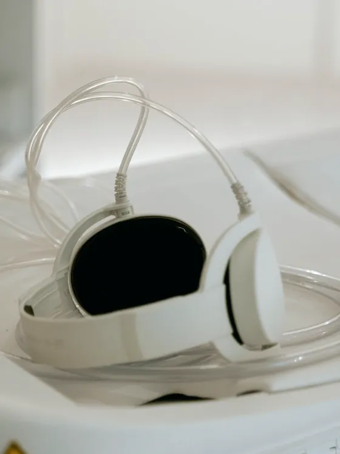
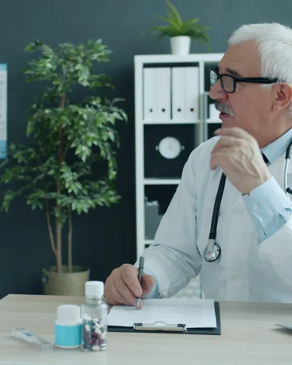
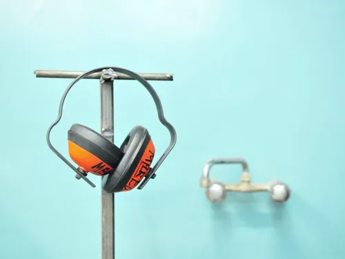
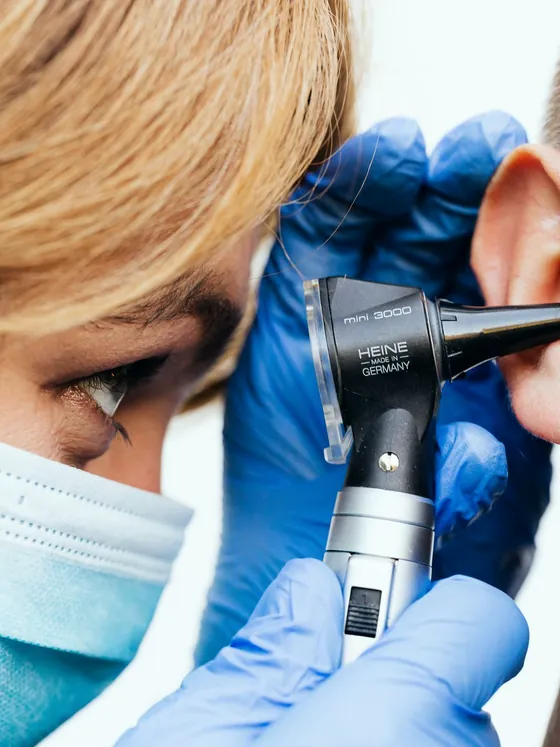
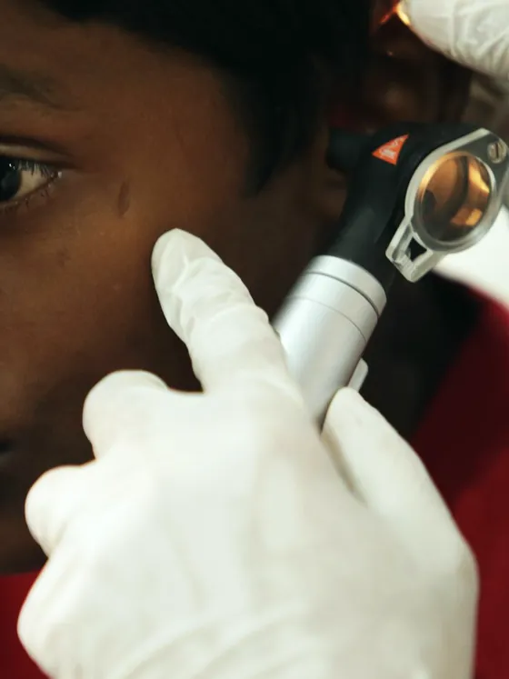
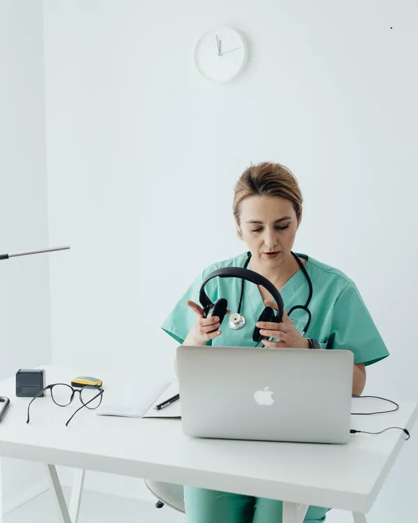

CH 01
Audição
Audiometria, imitanciometria e acompanhamento de perda auditiva.
Otorrino · audiologia · voz
Audiometria, aparelho auditivo, zumbido, voz e otorrino infantil numa clínica só, em Petrópolis, Natal.
A clínica
Quem chega com zumbido muitas vezes também ronca, tem rinite ou força a voz no trabalho. Na Timbre, otorrino, audiologista e fonoaudióloga atendem no mesmo andar e discutem o caso juntos.
Os exames são feitos em cabine acústica na própria clínica, e o resultado sai explicado no mesmo dia. Sem encaminhamento de um prédio para outro.


Especialidades

Audiometria, imitanciometria e acompanhamento de perda auditiva.

Zumbido, tontura, sinusite, rinite e ronco, com videoendoscopia no consultório.
Fonoaudiologia para professores, cantores e quem fala o dia inteiro.

Otite de repetição, adenoide, teste da orelhinha e atraso de fala.
Aparelho auditivo
Testamos modelos de diferentes marcas na sua rotina por até 30 dias antes da compra. A regulagem é feita com medição dentro do ouvido, e os retornos de ajuste estão incluídos no primeiro ano.
Teste rápido
Coloque fones, deixe o volume do aparelho em um nível confortável e, para cada frequência, arraste o controle devagar a partir do zero. Solte quando o som aparecer. É uma triagem, não substitui a audiometria.
Sinais para não adiar

Como é a consulta
Histórico, rotina de ruído e o que mais incomoda.
Otoscopia e, se preciso, videoendoscopia na hora.
Audiometria e imitanciometria no mesmo andar.
Resultado explicado e próximos passos por escrito.
Equipe
CRM-RN 00000 · Zumbido, tontura e rinossinusite. Atende adultos e crianças.
CRM-RN 00000 · Perda auditiva, aparelho auditivo e implante coclear.
Não para a triagem. Para o reembolso do plano, a otorrino emite o pedido na própria consulta.
Cerca de 30 minutos na cabine acústica, com o resultado explicado logo depois.
Sim, a partir do nascimento, incluindo o teste da orelhinha e a avaliação de atraso de fala.
Pode. São até 30 dias de teste em casa, com retornos para ajuste.
Contato
Rua Mossoró, 000 · Petrópolis, Natal-RN
Segunda a sexta, 7h30 às 18h30